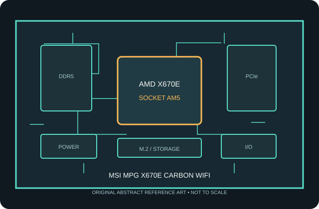

[ INDIVIDUAL COMPONENT // MOTHERBOARDS ]
MSI MPG X670E CARBON WIFI
AMD X670E Socket AM5 retail motherboard, 2022. This record describes only the named model; confirm the printed model, revision and firmware on the physical board.

MODEL / REVISION WARNING: Similar names, Wi-Fi variants and PCB revisions can differ in wireless hardware, connectors, lane routing and firmware. Identify the exact model and revision before installation or BIOS updates.
Specifications
| Model / chipset | MSI MPG X670E CARBON WIFI — AMD X670E, 2022 |
|---|---|
| Socket / processor compatibility | Socket AM5 and X670E chipset. Compatible Ryzen 7000/8000G/9000 processors require inclusion in MSI's exact-model CPU-support table and any listed BIOS update. |
| Memory | Four DDR5 DIMM sockets, dual-channel, with EXPO support. Supported capacity and overclocked rates depend on CPU memory controller, BIOS and validated DIMM population; use MSI's compatibility list. |
| Form factor | ATX (305 × 244 mm) |
| PCI Express expansion | Primary CPU-connected graphics slot is PCIe 5.0 x16; additional x16-length slots operate at reduced widths/generations. PCIe lane allocation changes with CPU generation, secondary-slot use and M.2 population. |
| Storage | Four M.2 sockets: two CPU-connected PCIe 5.0 x4 and two PCIe 4.0 x4, with six SATA 6 Gb/s ports. Review MSI's lane-sharing table before installing multiple devices. |
| Rear I/O | Rear USB-C at USB 3.2 Gen 2x2 and Gen 2 speeds, several USB Type-A ports, HDMI/DisplayPort outputs, 2.5GbE, Wi-Fi antenna connectors, audio and Flash BIOS button. |
| Networking / audio | Realtek 2.5Gb Ethernet, Wi-Fi 6E / Bluetooth (module and market dependent), and onboard multichannel audio. |
| Firmware / compatibility | UEFI support, CPU list and minimum BIOS are model-specific. AM5 uses DDR5 only. Match the case to the stated board dimensions, use the correct EPS/ATX power leads, install the AM5 cooler with its supported mounting hardware, and check the manual's lane-sharing/connector tables before populating M.2 and PCIe devices. |
Compatibility notes
AM5 processors are not interchangeable with AM4 CPUs. Consult the manufacturer's CPU support list for the exact board and verify the required BIOS before purchasing or installing a processor. A BIOS flash utility does not make an unlisted CPU compatible.
DDR5 EXPO profiles are memory overclocking; stability, capacity and transfer rate depend on the CPU memory controller, DIMM type/population, firmware and the board's validated memory list. Storage protocols, expansion-slot widths, graphics lane reduction, SATA disablement and USB functionality depend on the connector and lane-sharing rules described in the current manual.
Confirm the physical dimensions and standoff layout against the chassis, install only the correct AM5 cooler hardware, connect required CPU power leads, and use the supplied Wi-Fi antenna where fitted. Firmware updates must match this exact model/revision and follow the manufacturer's procedure.
Preservation and handling
AM5 is an LGA socket: protect its exposed contacts from handling damage and contamination. Before installation, inspect the socket, DIMM slots, M.2 thermal pads, rear-I/O shield and power connectors. Record PCB revision, serial/date codes and BIOS version; retain the original packaging and document test conditions and any repairs.
Manufacturer sources
- MSI MPG X670E CARBON WIFI — product and manualManufacturer-provided model reference; use this resource to confirm specifications and model-specific support.
- MSI MPG X670E CARBON WIFI — specifications and supportManufacturer-provided model reference; use this resource to confirm specifications and model-specific support.
Static summary for identification; manufacturer's documentation is authoritative. Confirm current CPU support, BIOS, memory population and resource sharing for the exact physical board.